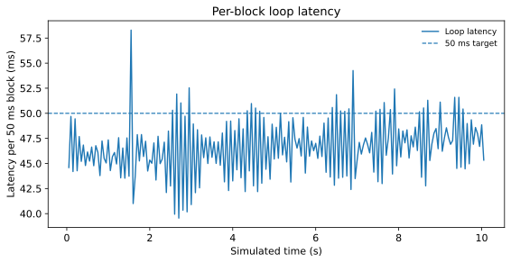
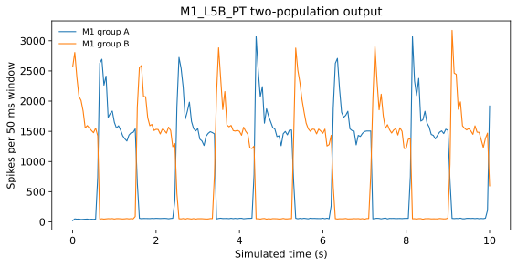
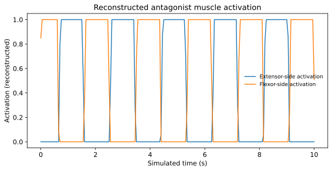
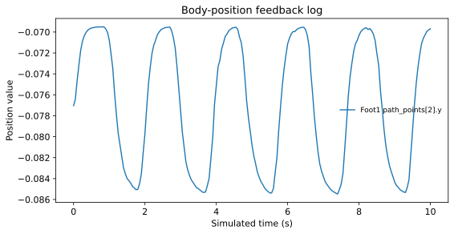
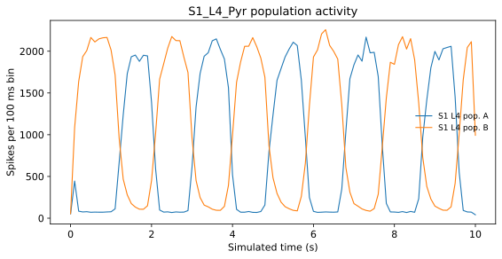
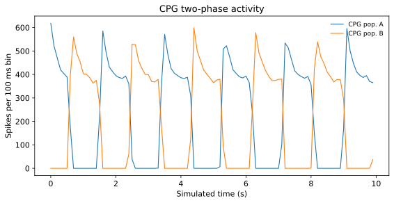

Overview概要
Closed-loop coupling from M1 to body and back to S1 M1から身体へ、身体からS1へ戻る閉ループ接続
We coupled a GPU-based multi-region SNN with a mouse forearm musculoskeletal model to examine real-time closed-loop brain–body simulation. GPUベース多領域SNNをマウス前肢筋骨格モデルと結合し、脳–身体閉ループをリアルタイムで実行できるか検証しました。
The loop maps M1_L5B_PT population activity to antagonist muscle activation, receives body-state feedback through a thalamic S1 relay, and propagates the resulting activity through the S1 network. M1_L5B_PT集団活動を拮抗筋のアクチュエーションへ変換し、身体状態を視床S1リレー経由の入力として戻すことで、M1→筋→身体→S1のオンライン閉ループを構成しています。
The long-term goal is a validation platform for sensory feedback, cerebellar interactions, and cortico–basal ganglia loops during movement generation. 将来的には、感覚フィードバック、小脳連関、皮質–基底核ループが運動生成に与える役割を検証する基盤へ発展させます。
Run data実行データ
Connected NRP/Gazebo run: run0001 NRP/Gazebo接続実行: run0001
The uploaded data package contains the connected run from 2026-06-23 03:23–03:25 JST. Values below are computed from the included CSV logs. アップロードされたデータパッケージには、2026-06-23 03:23–03:25 JSTの接続実行ログが含まれています。以下の値は同梱CSVから算出したものです。
Note: this dataset gives 86.6% of 50-ms blocks within target. The poster PDF may show a previous value, so use this section as the reproducibility record for run0001. 注: このデータセットでは50 ms以内のブロックは86.6%です。ポスターPDFには以前の値が残っている場合があるため、run0001の再現性情報としては本セクションを参照してください。






Downloadable filesダウンロード用ファイル
Demo videosデモ動画
Poster result and future-direction demo 今回の結果と将来展開デモ
Only the NRP/Gazebo lever-pull demo is part of the present poster result. The MuJoCo Virtual Rodent demo is included as a future-direction prototype. 今回のポスター結果に対応するのはNRP/Gazeboのレバー引きデモです。MuJoCo Virtual Rodentの歩行デモは将来展開を示す別プロトタイプとして掲載しています。
Poster result今回の結果
NRP/Gazebo mouse forearm lever-pull model
Mouse forearm musculoskeletal model performing lever-pull motion while coupled to the GPU SNN loop. GPU SNN閉ループと結合したマウス前肢筋骨格モデルによるレバー引き運動。
Future direction将来展開
MuJoCo Virtual Rodent walking prototype
Four-limb rodent walking prototype based on MuJoCo Virtual Rodent. This implementation is not an explicit musculoskeletal model; virtual muscle-length differences are computed internally and used to estimate joint angles. MuJoCo Virtual Rodentを用いた4肢歩行プロトタイプです。明示的な筋骨格モデルではなく、内部で仮想的な筋長差を計算し、そこから関節角度を推定しています。
Implementation summary実装概要
How spikes, muscle commands, and sensory feedback are connected スパイク列、筋指令、感覚フィードバックの接続
Runtime実行単位
CBT is updated at 1.0 ms, cerebellum and CPG use 0.1-ms internal steps, and NRP/Gazebo I/O is synchronized every 50 ms.CBTは1.0 ms刻み、小脳とCPGは0.1 ms内部刻みで更新し、NRP/Gazebo入出力は50 msブロックごとに同期します。
M1 to musclesM1から筋へ
M1_L5B_PT is split into two populations. Their spike-count difference over each 50-ms window updates a low-dimensional state, which drives one of two antagonist muscle groups.M1_L5B_PTを2群に分け、50 ms窓のスパイク数差で低次元状態を更新し、その符号に応じて拮抗筋群を切り替えて駆動します。
Body to S1身体からS1へ
Humerus muscle lengths are converted into two feedback rates, copied to GPU memory, and injected as Poisson input to TH_S1 relay neurons before propagating to S1.Humerus筋長を2種類のフィードバック発火率へ変換し、GPUへ転送した上でTH_S1リレー細胞へのポアソン入力として与え、S1へ伝搬させます。
Cerebellum and thalamus小脳と視床
M1 spikes are passed to cerebellar mossy-fiber input, and DCN spikes are routed to TH_M1 in a CPG-phase-dependent manner.M1スパイクを小脳苔状線維入力として渡し、DCNスパイクはCPG相に応じてTH_M1へ入力します。
ROS/NRP topics and reproducibility detailsROS/NRPトピックと再現性情報
Subscribed body topic: /gazebo_muscle_interface/robot/muscle_states. Published activation topics: Foot1, Foot2, Radius1, Radius2, Humerus1, and Humerus2 /cmd_activation.身体側からは /gazebo_muscle_interface/robot/muscle_states を購読し、Foot1、Foot2、Radius1、Radius2、Humerus1、Humerus2 の /cmd_activation へ筋アクチュエーションを送信します。
Run environment: Tesla V100-PCIE-16GB for CBCT, NVIDIA driver 535.309.01, CUDA 11.5 / nvcc V11.5.119. The NRP/Gazebo run had active muscle-state, activation, and clock topics.実行環境はCBCT側がTesla V100-PCIE-16GB、NVIDIA driver 535.309.01、CUDA 11.5 / nvcc V11.5.119です。NRP/Gazebo側では筋状態、アクチュエーション、clockトピックが有効でした。
The current logs do not directly store all six published cmd_activation values; the activation plot is reconstructed from m1_rates_50ms.csv using the same readout rule.現時点のログには6筋すべての cmd_activation 値は直接保存していません。そのため、アクチュエーション図は m1_rates_50ms.csv から同じ読み出し規則で再構成しています。
Future hypothesis将来仮説
Testing hierarchical reinforcement learning in closed-loop virtual rodents 閉ループ仮想齧歯類における階層強化学習仮説の検証
Future work will implement reinforcement-learning-inspired rules in cerebellar and cortico–basal ganglia loops. The working hypothesis is that these loops play complementary roles in hierarchical motor control: low-level sensorimotor adaptation, action selection, and policy modulation. 今後は、小脳連関と皮質–基底核ループのそれぞれに強化学習に着想を得た学習則を導入します。作業仮説は、低次の感覚運動適応、行動選択、方策調整を担う相補的なループとして、これらを階層的運動制御の中で検証できるというものです。
The MuJoCo Virtual Rodent prototype is positioned as a step toward a freely moving virtual rodent validation platform. MuJoCo Virtual Rodentプロトタイプは、自由に動き回る仮想齧歯類の検証基盤へ発展させるための準備段階として位置づけています。
Poster PDFポスターPDF
Full posterポスター全文
The PDF is embedded below. Some mobile browsers may open it in a new tab instead of previewing it inline.PDFを下に埋め込んでいます。モバイルブラウザでは、プレビューではなく新しいタブで開かれる場合があります。
References参考文献
References参考文献
- Kuniyoshi et al., Frontiers in Neurorobotics, 2023.
- Falotico et al., Frontiers in Neurorobotics, 2017.
- Kuriyama et al., Frontiers in Cellular Neuroscience, 2021.